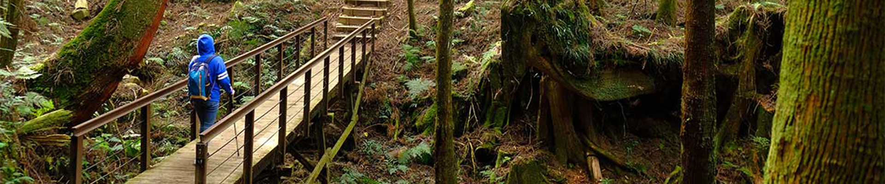
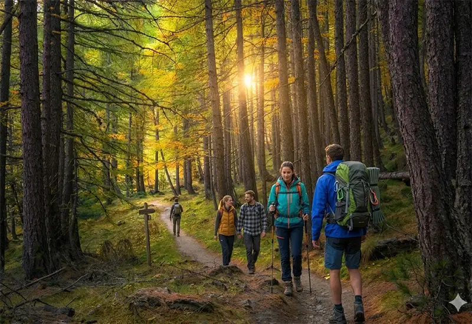
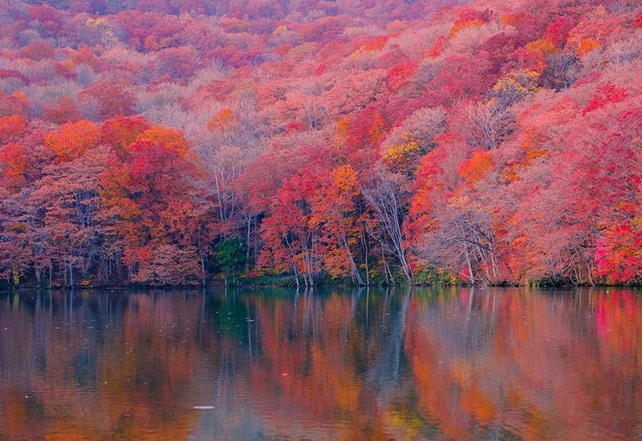
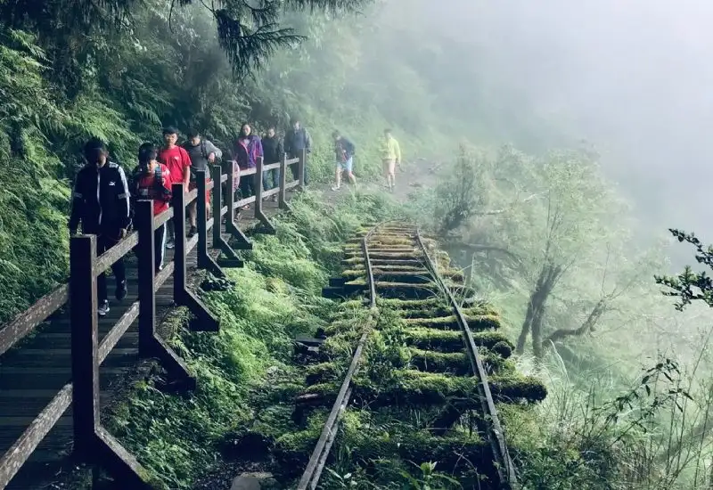

北部景點
東勢格古道
東勢格古道位於臺灣新北市平溪區，是一條充滿歷史與自然風光的登山古道。此步道早年為居民往返平溪、十分與瑞芳間的重要聯絡道，如今則成為兼具人文遺跡與山林景觀的熱門健行路線。
步道沿線林相豐富，常見相思林、竹林與茶園景觀。登高處可俯瞰平溪山谷與基隆河谷，視野開闊。沿途亦可見小型溪谷、石階古橋及在地農舍，具濃厚的山村風情。
登山與路線:常見健行路線為由平溪火車站出發，經東勢格古道登上東勢格山（約海拔500公尺），再下行接往十分或望古方向，全程約需2至3小時。路況以石階與泥徑為主，坡度適中，適合一般登山者。

金瓜寮魚蕨步道
魚蕨步道位於臺灣新北市坪林區，是一條以豐富茶鄉生態與山林景觀著稱的郊山步道。步道全程約2公里，坡度平緩，適合一般民眾健行與自然觀察，為坪林茶鄉重要的休閒路線之一。
魚蕨步道因沿途生長大量蕨類植物而得名，沿線設有木棧道與石階步道，穿越茶園、闊葉林與溪谷地形。途中可遠眺北勢溪流域及層疊茶山景觀，並設有解說牌介紹當地植物與生態系。步道終點可銜接其他坪林步道系統，形成多樣化的登山與健行選擇。
交通與遊憩:遊客可自坪林老街出發，經北宜公路（台9線）轉入魚蕨里即可抵達步道入口。入口附近設有停車空間與休息亭。由於鄰近坪林茶業博物館與茶園聚落，可結合茶文化導覽與在地美食品嘗，形成完整的一日遊行程。
中部景點
日月潭環湖步道
日月潭環湖步道位於臺灣南投縣魚池鄉，環繞著著名的日月潭湖畔修建而成，是結合自然景觀與休閒設施的環湖路線。此步道是遊客體驗湖光山色、欣賞日月潭生態與文化的重要方式之一。
環湖步道依地形分為多段，包括「水社至向山段」、「向山至頭社段」、「頭社至伊達邵段」等，部分區域設有獨立的自行車道與行人道。步道沿途可俯瞰潭面倒影、遠眺群山，亦穿越樹林與小村，景色變化多端。由於坡度平緩，適合各年齡層遊客。
旅遊與設施:步道各段皆設有休息區、觀景平台與導覽標誌，部分地段可與向山遊客中心、水社碼頭、伊達邵碼頭串聯。遊客可選擇全程環湖或分段漫步，也能租借自行車完成「日月潭環湖自行車道」之旅，為南投地區最受歡迎的戶外活動之一。
清水岩森林遊憩區步道
清水岩森林遊憩區步道位於臺灣彰化縣社頭鄉，是一條結合宗教文化與自然景觀的山林健行路線。步道以清水岩寺為核心，因鄰近清水岩風景區與森林生態區而得名，為中彰地區熱門的休閒登山據點。
步道以清水岩寺為起點，沿途設有多條支線，包含環山步道與通往觀景台的登山道。路線鋪設完善，多為石階或木棧道，難度屬中低級。沿途林木茂密，常見相思樹、榕樹及原生灌木，環境清幽，蟲鳴鳥叫不絕。
旅遊資訊:清水岩森林遊憩區全年開放，春秋氣候涼爽最適合健行。從社頭火車站或高速公路社頭交流道前往約需10至15分鐘車程，是彰化地區民眾假日踏青與祈福的熱門去處。
南部景點
關子嶺紅葉公園步道
關子嶺紅葉公園步道位於臺灣臺南市白河區關子嶺風景區內，是結合山林景觀與溫泉文化的生態休閒步道。此地以秋季楓紅、天然森林與豐富生態著稱，吸引遊客賞楓與健行。
紅葉公園步道以楓香、青楓與櫸木林相交織，秋冬之際葉色轉紅，是南臺灣少見的賞楓據點。沿途設有觀景平台、木棧道與解說牌，讓遊客可輕鬆漫步並觀察在地植物與鳥類。步道末段可眺望白河山區層疊山景與關子嶺溫泉區全貌。
交通與遊覽資訊:可由白河市區沿172縣道前往關子嶺溫泉區，於紅葉隧道口旁步行即可抵達步道入口。園區鄰近關子嶺溫泉老街及水火同源等景點，適合規劃半日或一日遊行程。園區設有停車場、公廁及簡易休憩區，維護良好，適合親子與長者同遊。

藤枝森林遊樂區
藤枝森林遊樂區位於臺灣高雄市六龜區，是農業部林業及自然保育署管轄的國家森林遊樂區。園區以中海拔山地雲霧林景觀著稱，氣候涼爽，被譽為「南台灣的陽明山」因生態豐富與步道完善，是熱門的登山與賞鳥地點。
藤枝位於中央山脈西側，地形起伏大，四季雲霧繚繞，氣溫常年介於10至20°C。豐沛雨量孕育多樣植物，如樟樹、紅檜、台灣杉等。區內擁有多層次林相與豐富野生動物，包括帝雉與藍腹鷴，是南部少數保存完整的中高海拔森林生態系。
交通資訊:從高雄市區可經由省道台27線轉入六龜，再沿藤枝林道抵達園區，全程約2.5小時車程。園區入口有停車場與接駁設施，部分路段山區蜿蜒，建議小型車或包車進入。
東部景點
知本國家森林遊樂區
知本國家森林遊樂區位於臺灣臺東縣卑南鄉，鄰近著名的知本溫泉區。以豐富的熱帶、亞熱帶雨林生態和完善的步道系統聞名，是東部地區結合森林浴、賞鳥與溫泉休閒的重要據點。
園區規劃有四條主要步道，包含龍鳳谷步道、森林浴步道、景觀步道與大圓環步道，長短難易各異，適合不同體能的遊客。沿途設有觀景亭、吊橋及休憩平台，可眺望知本溪谷與森林景觀。入口區亦設有遊客中心、植物解說區與森林教室。
旅遊重要性:園區以交通便利、環境清幽著稱，是台東近郊最受歡迎的自然景點之一。除了一般觀光外，亦常舉辦森林解說、環境教育及健行活動，兼具生態保育與休閒功能。

砂卡礑步道
砂卡礑步道位於花蓮縣太魯閣國家公園，是東台灣最受歡迎的森林健行路線之一。步道沿 砂卡礑溪 延伸，溪水因石灰質與礦物反射呈現清澈藍綠色，沿途穿越壯麗大理岩峽谷與垂直岩壁，景觀壯觀又安全，路線平緩，適合各年齡層健行與親子散步。
旅遊與保育:砂卡礑步道入口位於太魯閣遊客中心附近，入口明顯且交通方便。由於地質脆弱與雨季坍方風險，部分路段偶有封閉維修，遊客須留意公告。園方推行低衝擊旅遊與垃圾回收措施，以維護溪谷生態與文化景觀的永續性。